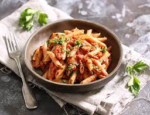

Pasta with bacon

Description
Treat your taste buds to a delicious experience with our Pasta with bacon.
This easy recipe combines crispy bacon with homemade tomato sauce, creating a flavorful pasta dish.
It's simple, satisfying, and perfect for a tasty meal.
Enjoy the delicious blend of bacon and tomatoes in every bite!
Ingredients
- 1 red onion
- 2 red peppers
- 120g bacon
- 1 can of tomatoes
- 1 cup of water
- olive oil
- garlic
- oregano
- 50g pasta per person
Steps
- Cut the onion, red peppers and bacon into small pieces
- Heat some olive oil in a pan and fry the onion, red peppers and bacon
- Add oregano, garlic, tomatoes and water and cook for 20 minutes
- Cook the pasta in a big pot of boiling water
- Serve the pasta with the sauce, and enjoy!